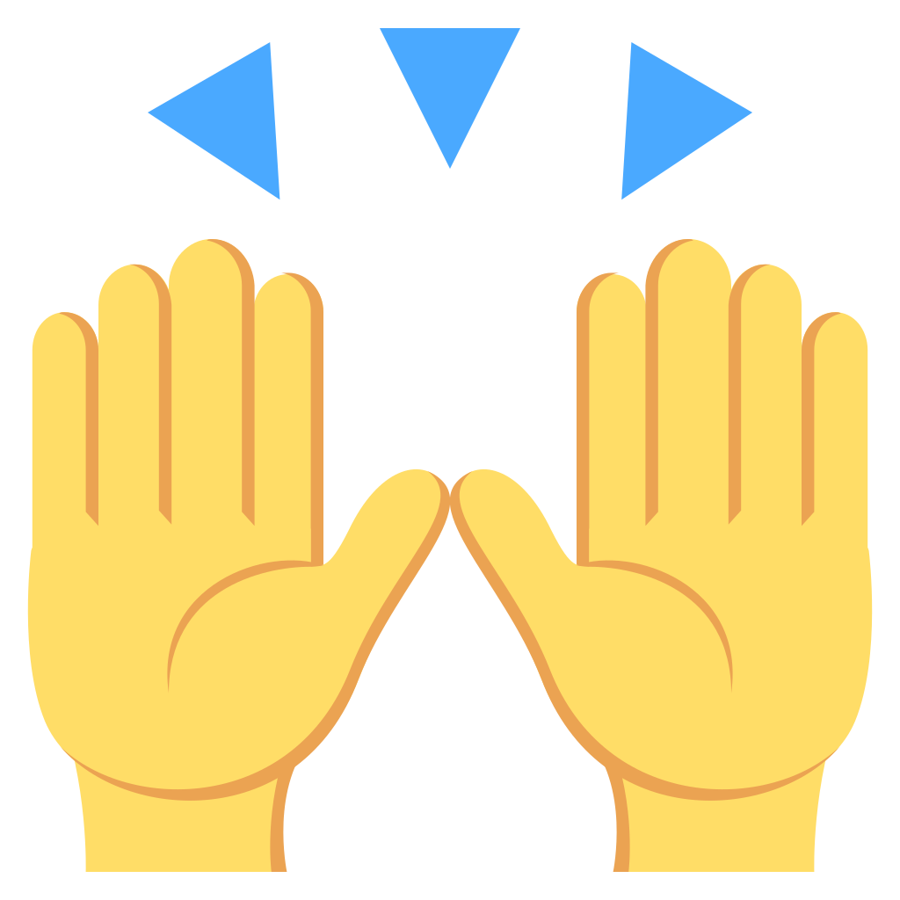

Olá!
Eu sou o Geovani!
Crawler de memes e desenvolvedor na Serrabits!
(nós fazemos software pro setor moveleiro)
Vim aqui falar sobre...
Buzzwords!
Palavras barulhentas em inglês
Microserviços
DevOps
AWS Lambda + AWS API Gateway
ServerWHAT?
aka: "sem infraestrutura permanente"
Aplicação tradicional:
- Você cria o servidor
- (configuração, manutenção, atualização, escala)
- Web Server fica ouvindo requisições
- ...
- WS recebe uma requisição
- Aplicação processa a requisição
- Aplicação devolve resposta para o WS
- WS devolve a resposta e espera próxima requisição
Serverless:
- API Gateway está sempre disponível
- "Servidor" é criado
- Lambda processa a requisição
- Lambda devolve resposta para o API Gateway
- "Servidor" é destruído
~30ms!
Vantagens?
Super escalável!
1 requisição = 1 servidor
100 requisições = 100 servidores
10000 requisições = 10000 servidores*
- Zero manutenção!
- Zero load balancer
- Zero brechas de segurança*
- Zero downtime

Combina com microserviços
Diminui complexidade*
Super fácil para começar!
$ npm install -g serverless
$ serverless create -t aws-nodejs
Começe a codar
Super fácil para implantar!
Ordens de magnitude mais barato!
$0.000000002/ms
Bônus 3.200.000 segundos grátis!
Sem vendor lock-in!
- Google Cloud Functions
- Azure Cloud Functions
- IBM / OpenWhisk
- IronFunctions
- Twilio Functions
- ...
O que pode ser substituído com Serverless?
Auto-resposta de chamados
Backups automáticos
Arquivamento de whatever
Gerador de PDF
Cont...
- Chatbots
- Texto para voz
- Reconhecimento de voz
- Reconhecimento de imagens
Desvantagens!
Warm-up
Monitoramento precisa melhorar
TDD = cheap
Integration = complex
Obrigado! @geovanisouza92
Perguntas?